Unidad 4.2 Paisaje, identidad y sostenibilidad territorial
El paisaje es simultáneamente la proyección cultural de una sociedad en su territorio y la manera como las distintas dimensiones y expresiones de ese territorio influyen en la configuración de las culturas que coexisten en él. Es por tanto, un concepto enormemente impregnado de connotaciones culturales y puede interpretarse como un dinámico código de símbolos que nos hablan de la cultura generada en el territorio: de su pasado, de su presente y quizás también de su futuro. La cultura se manifiesta en el territorio tanto en sus dimensiones prácticas —relacionadas con la vocación del suelo, la gestión del paisaje y de los recursos naturales— como en sus expresiones simbólicas —política, social, histórica y económica— que configuran identidades territoriales, y formas particulares de habitar el territorio.
Desde esta perspectiva, el paisaje rural y urbano de Bogotá no es simplemente un espacio físico con características ecológicas particulares, sino el resultado de una coevolución histórica entre sistemas naturales y prácticas culturales. En esta Sección se caracteriza la calidad ambiental utilizando como insumo la manera como —tanto a nivel individual como colectivo— los sentidos perciben el paisaje. Y aquí se incluyen sentidos como la vista, la audición, el olfato, el gusto y el tacto, pero también el de pertenencia, los de arraigo y desarraigo; en suma, los de identidad territorial entendida como lo que significa para cada persona o grupo formar parte de este territorio.
1.1. La calidad ambiental del paisaje
El Decreto 2811 de 1974 “Código de Recursos Naturales y de Protección al Medio Ambiente” establece en su artículo 302 que “La comunidad tiene derecho a disfrutar paisajes urbanos y rurales que contribuyan a su bienestar físico y espiritual”. En esa misma línea, la Ley 99 de 1993 afirma en el numeral 8 del artículo 1° que “El paisaje por ser patrimonio común deberá ser protegido”, y en el artículo 5, numeral 11, que “Corresponde al Ministerio del Ambiente: Dictar regulaciones de carácter general tendientes a controlar y reducir las contaminaciones atmosférica, hídrica, del paisaje y sonora”. El marco legal colombiano protege simultáneamente la calidad ambiental y el paisaje.
En Bogotá se debe velar por la integridad y calidad de los elementos del Sistema Ambiental Regional, como soporte de la vida y de la sostenibilidad territorial. Los recursos naturales, las áreas protegidas y los servicios ecosistémicos, se deben preservar para las necesidades futuras y buscando equilibrio entre el desarrollo económico, el cuidado del medio ambiente y el bienestar social.
La calidad ambiental es el estado actual de los componentes naturales del territorio que emerge de la interacción de múltiples factores interdependientes:
-
La calidad de los suelos afectada por procesos de degradación como la erosión, compactación, sellamiento, desertificación, contaminación y salinización, condiciona directamente la productividad agrícola y la integridad ecosistémica.
-
La calidad del recurso hídrico superficial y subterráneo, que se ha visto comprometida por el uso indiscriminado para industrias y cultivos como los de flores, y la contaminación agrícola, industrial y doméstica, así como por la ocupación de cauces, construcción de embalses y diques, o destrucción de ecosistemas claves en el ciclo hidrológico como humedales, bosque alto andino, bosque tropical de la Amazonía, llanuras orinocenses y páramos, que han destruido el valor cultural del agua y sus posibles usos. Hay una gran cantidad de contaminantes como residuos sólidos, materia orgánica, microorganismos, NOx, SOx, sólidos disueltos y suspendidos que deben ser parametrizados mediante técnicas de laboratorio y estándares como el Índice de Calidad del Agua–ICA. Si el agua superficial o subterránea contaminada se utiliza para riego puede llegar a los productos agrícolas, y por vía del pasto a la leche y luego a los humanos.
Mapa 4. Índice de calidad de agua: superficiales de los principales cuerpos hídricos de Bogotá en diferentes años
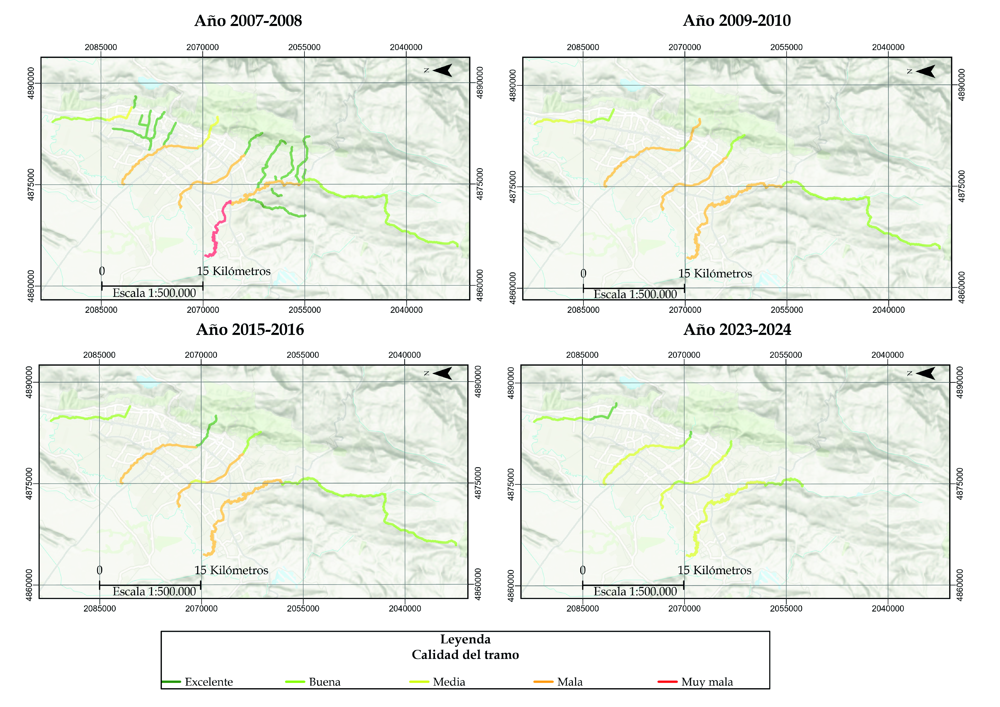
Este indicador muestra la distribución de la calidad del agua en Bogotá, dónde aguas abajo están más contaminadas que aguas arriba debido a toda la contaminación por aguas residuales, escorrentía urbana y residuos sólidos. Además, se ve la mejora en general de la calidad del agua en los principales ríos de la ciudad desde el 2007 al 2024. Medir la evolución de la mejora en la calidad del agua sirve para demostrar que las acciones de mitigación y corrección de los impactos ambientales si sirven para mejorar la calidad ambiental de manera integral y así, la calidad de vida. La contaminación del agua se debe corregir desde aguas arriba por medio de la corrección de conexiones erradas de aguas residuales a aguas pluviales, disponer los residuos de manera correcta y resignificar nuestra relación con el recurso hídrico. Fuente: Elaboración Sociedad de Mejoras y Ornato de Bogotá con información del IDEAM 2020.
- La calidad del aire depende del tiempo atmosférico y los contaminantes generados por fuentes fijas y móviles, antrópicas y naturales, que son dañinos para el ecosistema y la salud pública, como lo son: COx, NOx, SOx, O3, PM2.5-10, entre otros.
Mapa 5. Distribución de la red de monitoreo de calidad del aire de Bogotá y la calidad del aire en las estaciones de Carvajal Sevillana, Kennedy y Guaymaral, y la calidad del aire en diferentes puntos y 3 estaciones de la RMCAB a lo largo de una semana
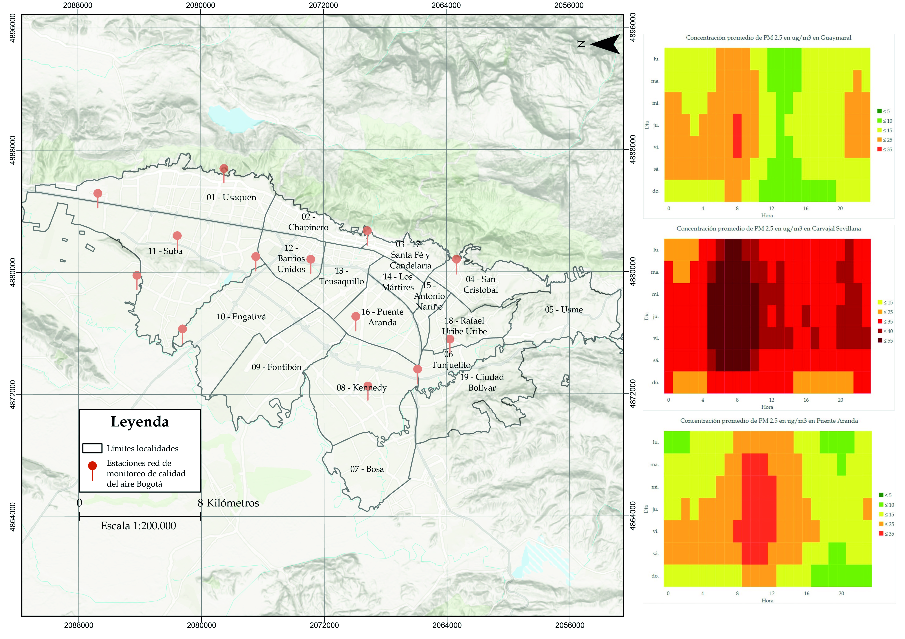
La calidad del aire se mide con indicadores de contaminantes, como el material particulado, de especial preocupación por sus graves efectos en la salud humana ya que son partículas de sustancias que pueden ser tóxicas para los habitantes humanos y no humanos. El material particulado —PM 2,5— es de especial preocupación porque mide apenas 2,5 micrómetros, un tamaño que puede entrar por los pulmones y al torrente sanguíneo por la difusión de oxígeno en los alveolos, generando afectaciones a la salud como el cáncer, en diferentes partes del cuerpo. La contaminación del aire tiene causas naturales, como los incendios forestales, las explosiones volcánicas o la erosión por el viento, pero también humanas por la actividades y herramientas humanas, como la combustión en industrias y autos. Por esto, se ve una clara correlación entre la mala calidad del aire en las zonas industriales y las principales vías de Bogotá, así como en las zonas con menor cantidad y calidad de vegetación que actúa como filtro de estos contaminantes. Este indicador sirve para tomar medidas de leyes o políticas públicas que prevengan la actividad industrial o el paso de vehículos de carga en zonas residenciales, o tecnológicas, como energías limpias, autos eléctricos u otras que tengan un menor impacto en la calidad del aire.
Fuente: Elaboración Sociedad de Mejoras y Ornato de Bogotá con información de la RMCAB de la Secretaría de Ambiente de Bogotá.
-
La calidad escénica del paisaje modificada por los impactos visuales a los componentes naturales del paisaje se debe a la destrucción de ecosistemas, minería, monocultivos o urbanización. Esta condición no solamente incluye al paisaje diurno sino también al paisaje y el cielo nocturno que es afectado por la contaminación lumínica.
-
La integridad ecosistémica gracias a su rol de determinante ecosistémico, por la prestación de servicios ecosistémicos e incidencia directa en la biodiversidad también funciona como indicador del estado de los ecosistemas presentes en el territorio. Este incluye también la integridad de los ecosistemas amazónicos, orinocenses y de páramos que constituyen eslabones esenciales para garantizar el ciclo del agua del cual depende la seguridad hídrica y climática del Distrito Capital y demás municipios que conforman la Sabana de Bogotá.
Imagen 9. Dimensiones de la calidad ambiental y su relación entre ellas
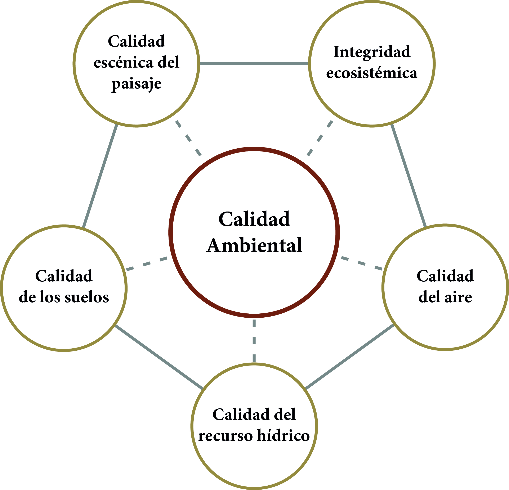
Fuente: Elaboración Sociedad de Mejoras y Ornato de Bogotá.
Las alteraciones en una dimensión de la calidad ambiental ya sea para mejorarla o, al contrario, causar degradación ambiental, a su vez generan impactos en las demás, por lo que se requiere un análisis, diagnóstico y gestión integral de la calidad ambiental, donde la prevención y protección es la prioridad.
La importancia ética y estratégica de no empobrecer el territorio en aquellas dimensiones en las cuales ya es “rico”, surge del hecho que no se puede pensar en las metas de desarrollo humano 1 y del paisaje, sin cuidar la calidad ambiental del territorio. Algunos de los impactos ambientales del humano en el ambiente que se deben evitar, mitigar y corregir en la Bogotá rural y urbana para potenciar la calidad ambiental y lograr la relación armónica con el Sistema Ambiental son: la pérdida de hábitat de humedal, páramo, subxerofitia andina y bosque andino; la contaminación del agua por residuos sólidos, aguas residuales, fertilizantes y pesticidas de agricultura; y la fragmentación de los ecosistemas de montaña, Sabana y el Amazonas por la deforestación. Las principales actividades que generan estos impactos son, entre otros, el uso insostenible de recursos biológicos, de minería, gravas en ríos y agua; la generación de residuos en los centros urbanos que van a parar a rellenos sanitarios; y el cambio climático inducido por las actividades humanas.
1.2. Significación cultural del paisaje para potenciar su calidad ambiental
En los últimos años, el binomio inseparable ciudad-región, se ha consolidado como un espacio complejo donde la dualidad socioecológica se materializa en el paisaje urbano y rural de Bogotá, en el cual la ciudad-región emerge como construcción cultural que a su vez transforma a sus habitantes, en un proceso circular de constante retroalimentación.
En el Antropoceno 2, la incertidumbre ambiental plantea un dilema entre el miedo y la esperanza: superar este desafío requiere aprovechar las capacidades humanas de memoria, resiliencia, adaptabilidad y transformación de sus expresiones —individuales, colectivas, culturales y de identidad territorial—, buscando un equilibrio entre desarrollo y calidad ambiental del paisaje. Así, la verdadera sostenibilidad territorial nace de esta coevolución entre sistemas de gestión científica y técnica, y sistemas de significación cultural, donde las transformaciones éticas y de las subjetividades individuales y colectivas, permiten materializar una estética ambientalista y el potencial agroforestal en prácticas culturales y paisajísticas concretas.
El paisaje de Bogotá rural y urbana encarna las complejas relaciones entre individuo, sociedad y naturaleza en el contexto contemporáneo. Su gestión efectiva requiere enfoques participativos y culturales que reconozcan tanto la interdependencia de los sistemas socioecológicos como los derechos colectivos y del paisaje. Para esto, es necesario entender la interrelación entre la calidad ambiental, el desarrollo y el bienestar humano para minimizar los impactos ambientales.
La gestión del paisaje requiere trascender el enfoque meramente técnico-normativo para incorporar sus dimensiones éticas, estéticas, simbólicas y culturales como eje transformador. Mientras los instrumentos técnicos proveen el soporte material para la caracterización y diagnóstico, son los valores individuales y las expresiones culturales las que determinan la voluntad de transformar el paisaje, la apropiación social, una identidad territorial arraigada al territorio y la materialización de nuevos paisajes con mejor calidad ambiental y de vida de los habitantes.
Este marco conceptual ofrece herramientas valiosas para identificar y abordar autónomamente las raíces culturales de los conflictos socioecológicos causados por la heterogeneidad espacial de los impactos a la calidad ambiental del paisaje, formando ciudadanos críticos frente a las transformaciones culturales y paisajísticas necesarias, y la conformación actual del paisaje del cual se forma parte.
1.3. Conformación del paisaje bogotano
Los procesos de significación cultural del paisaje operan a escala local y en periodos de tiempo largos. Las prácticas individuales, sociales y culturales cotidianas reflejan cómo las comunidades recuerdan y reinterpretan sus costumbres, para generar expresiones culturales frente a nuevas realidades y construir o intentar proteger los paisajes acordes a sus valores individuales, culturales, su patrimonio y su historia.
Actualmente el paisaje de las zonas planas es amplio y abierto con grandes haciendas que cada vez se van volviendo de menor tamaño por la fragmentación de predios debido a la industrialización, repartición de herencias, presión demográfica y búsqueda de vivienda fuera de la ciudad. En la montaña, se encuentra en las partes más altas el paisaje de páramo y en la parte baja el paisaje de los cerros con buena vista sobre la parte plana.
En esta parte plana se encuentran los municipios y ciudades más grandes, las industrias y gran parte de la vocación agrícola. Además, es donde se encuentran los suelos más fértiles debido a su naturaleza de sabana inundable y facilidad de irrigación, ya que es donde los ríos depositan los sedimentos y minerales que nutren el suelo. Aún hay un gran potencial de conservación de muchos de los cerros y páramos que no han sido intervenidos, así como el desarrollo de transformaciones paisajísticas restaurativas mediante una ecología del paisaje que aproveche los ecosistemas y áreas protegidas remanentes —cerros orientales, subxerofitia andina, humedales remanentes, bosques, reservas forestales como la Thomas Van der Hammen— y desarrollar iniciativas de restauración, conectores ecosistémicos y renaturalización del cauce de ríos y quebradas para potenciar la calidad ambiental, lo cual tiene beneficios ecológicos, hidrometereológicos, económicos y psicosociales para el territorio y sus habitantes humanos y no humanos.
El uso del suelo de la Bogotá región urbana y rural necesita la ampliación de la actividad agropecuaria más intensiva en la parte plana y su reducción o eliminación en los cerros y zonas secas, que deberán ser de dedicación forestal nativa y producción de agua, incluido el páramo. El paisaje actual de Bogotá debe su conformación a todos los cambios por transformaciones territoriales históricas, naturales y causadas por el humano, que han concurrido en el territorio.
Imagen 10. Paisaje de los cerros orientales de Bogotá desde el Verjón bajo, ecosistema de páramo y bosque andino
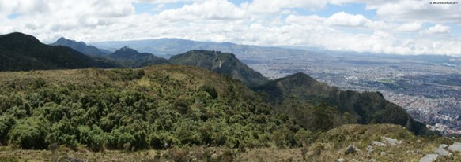
A la izquierda, paisaje de los cerros Orientales, y a la derecha, el paisaje urbano de Bogotá.Fuente: Foto de Gustavo Wilches-Chaux, 2011.
Imagen 11. Contraste del paisaje del centro Bogotá con las construcciones informales
 Al fondo las construcciones de origen informal en las localidades de Santa Fé y San Cristóbal en los cerros orientales.
Al fondo las construcciones de origen informal en las localidades de Santa Fé y San Cristóbal en los cerros orientales.
Fuente: Fotos de Pinterest
Imagen 12. Paisaje de Bogotá desde el Verjón bajo en los cerros orientales
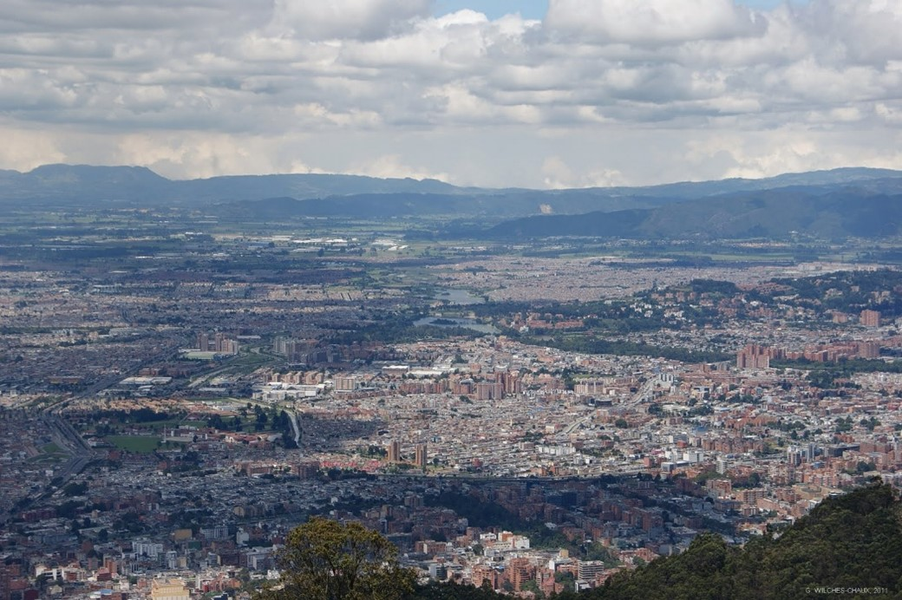
El suelo urbano de Bogotá que selló los suelos arcillosos y con alto potencial agrícola de la Sabana. Chapinero (parte inferior), Barrios Unidos y Engativá (parte central izquierda), humedal Tibabuyes (centro) y Suba (parte central derecha). A la derecha del humedal Tibabuyes los cerros de Suba reducido y rellenado para la construcción a sus alrededores y más al fondo los cerros del valle de Tabio y Tenjo. En la parte superior izquierda la Sabana Occidente y al fondo los cerros que bordean con Facatativá al occidente. Se ve claramente el sellamiento de uno de los suelos más fértiles de todo Colombia por la expansión de la huella urbana, la fragmentación causada por la ciudad entre cerros, humedales y ríos que perdieron su integridad ecosistémica y calidad escénica del paisaje. También se ve la alta nubosidad de la Bogotá rural y urbana que caracteriza el paisaje de esta región.Fuente: Foto de Gustavo Wilches Chaux, 2011.
Imagen 13. Paisaje desde el Verjón bajo hacia Ciudad Bolívar
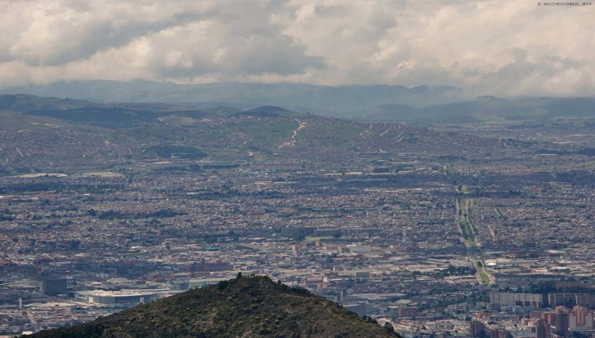
Al fondo las montañas de Ciudad Bolívar con las construcciones de origen informal, Cerro Seco y Cerro Colorado. Más atrás las montañas de Soacha y Bojacá.Fuente: Foto de Gustavo Wilches-Chaux, 2011.
Distintos actores no humanos forman parte del paisaje que percibimos, al tiempo que estos influyen en él: los cerros que rodean Bogotá y componen los valles de Bogotá, Teusacá, Subachoque, Nemocón, Tabio y Tenjo, entre otros; los volcanes nevados de la cordillera Central; los humedales, ríos y zonas inundables de la Sabana; las nubes y tormentas eléctricas que con alguna frecuencia tienen lugar en la Sabana y sobre el valle del Magdalena; los valles y montañas a través de las cuales la Sabana se une con la cuenca baja del río Bogotá luego del Salto del Tequendama y, más hacia el noroccidente, con el Tolima y con Caldas.
Hacia el oriente, desde Bogotá y sobre los Cerros Orientales, se observan las nubes y otras expresiones hidrometeorológicas que vienen desde la Orinoquía en su recorrido desde la Amazonía hasta Chingaza. Desde esta misma zona y también hacia el sur, se observan las montañas a las que se les destruyeron los ecosistemas, ahora habitadas por miles de familias de todas partes del país, asentadas allí debido, entre otros factores, a procesos de desplazamiento por causa de la violencia armada y de la violencia estructural. Hacia el sur de Bogotá y al norte, oriente y occidente del departamento de Cundinamarca se hallan los páramos transformados en tierras agrícolas y asentamientos humanos.
En Bogotá región también se encuentran lo que eran lugares sagrados para los muiscas como la laguna de Ubaque, la de Teusacá, las de Siecha, la de Guatavita, o las rocas de Suesca, y los cerros como Guadalupe y Monserrate, cuya historia y significado permanece en la cultura actual de los habitantes de la Sabana.
Imagen 14. Cordillera central del norte de los Andes desde la localidad de Sumapaz en lo alto del páramo
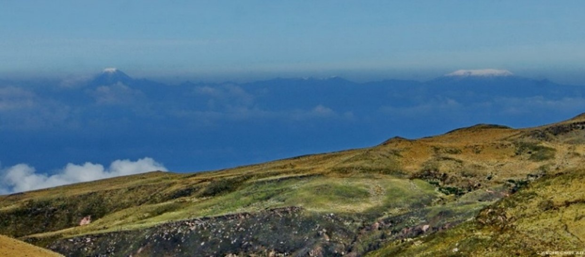
Al fondo los nevados del Tolima, Santa Isabel y el Ruiz. El paisaje tiene alcance regional y nacional, no solo local.Fuente: Foto de Gustavo Wilches-Chaux 2011.
Imagen 15. Paisaje de la frontera urbano-rural del norte de Bogotá sector Torca-Guaymaral, localidad de Usaquén
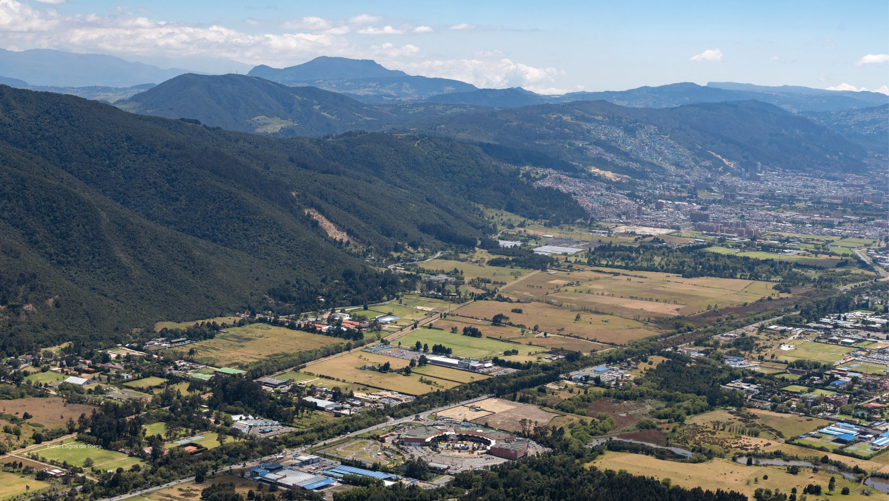
A la izquierda la parte oriental de la Reserva Thomas Van der Hammen, los cerros orientales y más al fondo las montañas que conforman la subcuenca del río Teusacá que a la altura de Sopó desemboca en el río Bogotá. En la parte inferior derecha el humedal Torca-Guaymaral reducido y fragmentado por la autopista norte y construcciones afectando su integridad ecosistémica. En los cerros se ven las zonas de minería y construcciones de vivienda que generan impactos en la calidad escénica del paisaje y la calidad ambiental en general.Fuente: Lagos de Torca
Imagen 16. Paisaje de la zona rural norte de Bogotá, Cota y el cerro el Majuy
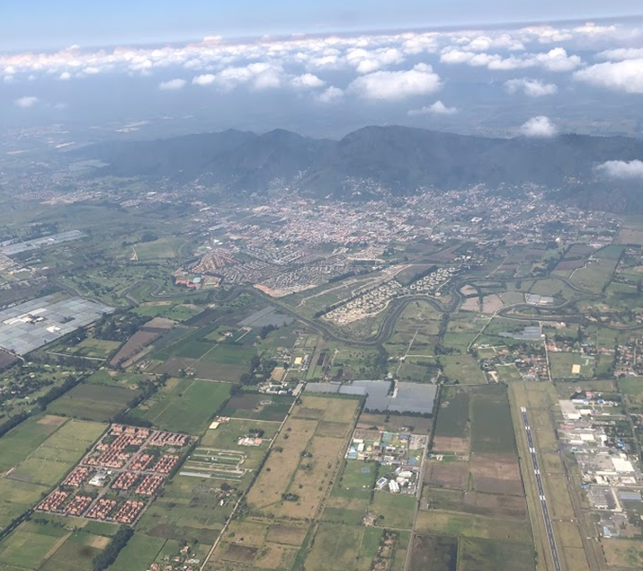
En el centro de la imagen el río Bogotá con su ronda hídrica invadida por construcciones, agricultura y floricultivos. La parte norte de la Reserva Forestal Productora Thomas Van der Hammen a la izquierda de la pista de aterrizaje del aeropuerto Guaymaral, el uso agropecuario del suelo, suburbanizaciones y el aeropuerto Guaymaral en la parte inferior.Fuente: Foto de Felipe Casses Franceschi, 2023.
Imagen 17. El paisaje de Chía desde la iglesia La Valvanera en los cerros occidentales de Chía
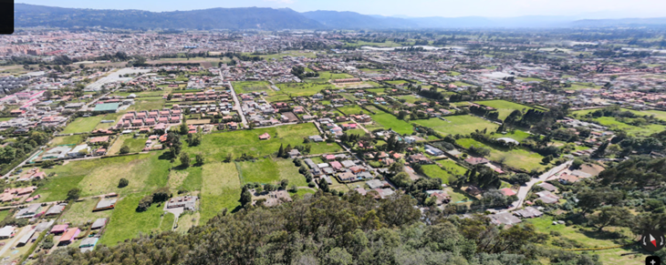
Los cerros orientales en la parte superior, y el Cerro de Suba se alcanza a ver en la esquina superior derecha. Se aprecia el suelo rural con el uso agropecuario y para vivienda campestre en la parte inferior, y en la parte superior izquierda el suelo urbano de Chía.Fuente: Foto de Google Maps.
Imagen 18. Paisaje del páramo de Guerrero en Zipaquirá y el Valle de Subachoque, parte de la cuenca del Río Bogotá
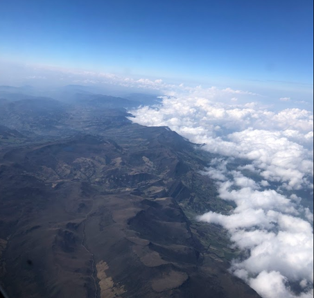
Inferior izquierda: páramo de Guerrero en Zipaquirá con algunos de sus suelos deforestados para agricultura y superior izquierda: Valle de Subachoque aún más intervenido. Otra cuenca de la macrocuenca del río Magdalena cubierto de nubes (derecha), después de la divisoria de aguas de la cuenca del río Bogotá.Fuente: Foto de Felipe Casses Franceschi, 2023
Imagen 19. Paisaje del páramo de Chingaza
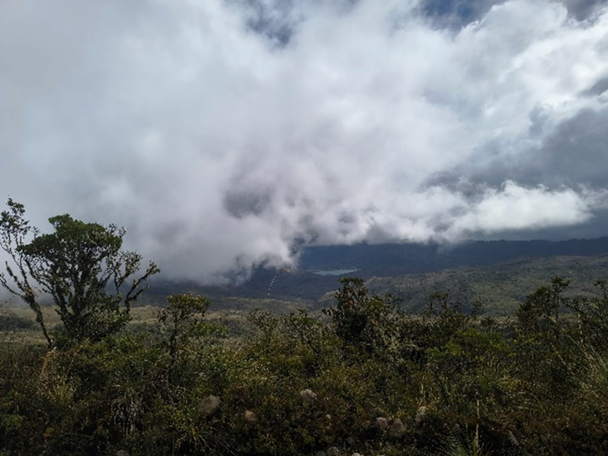
El Parque Nacional Natural Chingaza con un buen estado de conservación de los ecosistemas de bosque alto andino y páramo. En la parte central está la Laguna de Chingaza como cuerpo de agua natural. Las nubes en este páramo provienen de la Amazonía y Orinoquía, algunas siguen hasta Bogotá y conforman parte del paisaje.Fuente: Foto de Felipe Casses Franceschi, 2025.
El programa Construyendo Civilidad-Cátedra Bogotá fomenta en los ciudadanos la capacidad de caracterizar y diagnosticar el paisaje y la calidad ambiental de sus entornos, el análisis de la incidencia de las culturas locales en el estado del paisaje actual, y la resignificación de la relación cultural con el paisaje para imaginar otros posibles en un escenario de sostenibilidad territorial.
Mapa 6. Calidad escénica del paisaje para la zona de estudio y la cuenca del río Bogotá
 Este componente de la calidad ambiental refleja la percepción estética del paisaje en las zonas rural y urbana de la cuenca, evaluando impactos como la contaminación, la deforestación y la pérdida de vocación del suelo. Permite priorizar áreas para la recuperación paisajística y restaurar la calidad ambiental, de modo que los actores humanos y no humanos experimenten los resultados de una transición socioecológica hacia la sostenibilidad territorial.
Fuente: Elaboración Sociedad de Mejoras y Ornato de Bogotá con información de la ANLA.
Este componente de la calidad ambiental refleja la percepción estética del paisaje en las zonas rural y urbana de la cuenca, evaluando impactos como la contaminación, la deforestación y la pérdida de vocación del suelo. Permite priorizar áreas para la recuperación paisajística y restaurar la calidad ambiental, de modo que los actores humanos y no humanos experimenten los resultados de una transición socioecológica hacia la sostenibilidad territorial.
Fuente: Elaboración Sociedad de Mejoras y Ornato de Bogotá con información de la ANLA.
Mapa 7. Distribución del ambiente intervenido -la huella urbana, los suelos agrícolas- y las áreas protegidas de la zona de estudio
 Este indicador espacializa la distribución entre las áreas destinadas a la protección ambiental y aquellas bajo intervención humana —como la huella urbana y las zonas agrícolas—, las cuales generan presiones en todas las dimensiones de la calidad ambiental. Muestra los impactos derivados de los cambios en el uso del suelo, incluyendo la contaminación de recursos hídricos, aire y suelo, la fragmentación de hábitats y el sellamiento que reduce la recarga de acuíferos. Además, evidencia el potencial agroforestal de la Sabana de Occidente, según el artículo 61 de la Ley 99 de 1993, constituyéndose en un insumo clave para la priorización de zonas de conservación y producción agrícola sostenible.
Fuente: Elaboración Sociedad de Mejoras y Ornato de Bogotá con información del IDEAM, 2020.
Este indicador espacializa la distribución entre las áreas destinadas a la protección ambiental y aquellas bajo intervención humana —como la huella urbana y las zonas agrícolas—, las cuales generan presiones en todas las dimensiones de la calidad ambiental. Muestra los impactos derivados de los cambios en el uso del suelo, incluyendo la contaminación de recursos hídricos, aire y suelo, la fragmentación de hábitats y el sellamiento que reduce la recarga de acuíferos. Además, evidencia el potencial agroforestal de la Sabana de Occidente, según el artículo 61 de la Ley 99 de 1993, constituyéndose en un insumo clave para la priorización de zonas de conservación y producción agrícola sostenible.
Fuente: Elaboración Sociedad de Mejoras y Ornato de Bogotá con información del IDEAM, 2020.
Mapa 8. Calidad de los suelos: Salinización 3
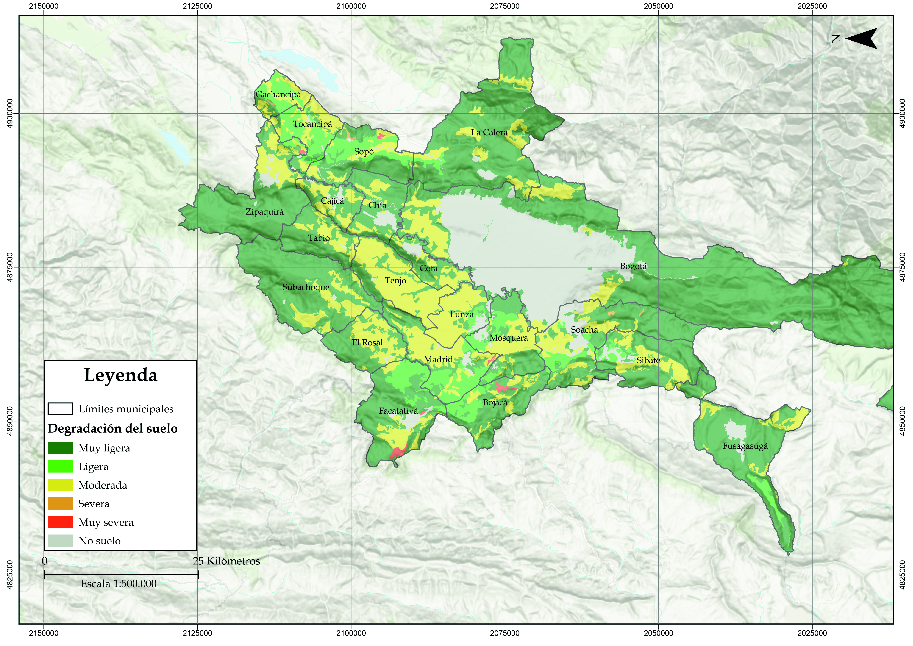
La salinización es una de las principales amenazas para los suelos de la cuenca. El riego con aguas del río Bogotá, el ascenso de napas freáticas por la presión urbana y la fertilización intensiva —especialmente en la floricultura— provocan una acumulación de sales que se agrava por sistemas de drenaje deficientes. Asimismo, la aplicación de pesticidas altera la biota del suelo y limita su capacidad de regulación natural, generando un ciclo de degradación donde la pérdida de fertilidad induce a un uso creciente de insumos. Este mapa territorializa las zonas priorizadas para la recuperación de suelos y los sectores en riesgo de degradación crítica. Fuente: Elaboración Sociedad de Mejoras y Ornato de Bogotá con información de la IDEAM.Mapa 9. Calidad de los suelos: Desertificación 4
 La desertificación para la zona de estudio es un indicador que ilustra acerca de los efectos en la calidad del suelo de actividades como la agricultura intensiva, el sobrepastoreo o el sellamiento de los suelos. La calidad del suelo es dada por la cantidad y calidad de nutrientes, materia orgánica, humus, microorganismos, hongos, humedad y otros componentes claves para el suelo. La desertificación genera suelos infértiles por falta de sus componentes, y cobertura que lo proteja y regenere, lo que los vuelve más propensos a la erosión por el viento y el agua. Esto conlleva impactos críticos: pérdida de biodiversidad, reducción de la recarga hídrica de acuíferos y quebradas, alteración del microclima local con incremento de temperaturas, y amenaza directa a la seguridad alimentaria al comprometer la productividad de suelos esenciales para la agricultura y la sostenibilidad regional. Los suelos desertificados se pueden recuperar mediante estrategias como sistemas silvopastoriles o biorremediación, por lo que este mapa muestra los lugares priorizados para la recuperación de suelos y evitar que la desertificación se vuelva el paisaje en la Bogotá urbana y rural. 5
La desertificación para la zona de estudio es un indicador que ilustra acerca de los efectos en la calidad del suelo de actividades como la agricultura intensiva, el sobrepastoreo o el sellamiento de los suelos. La calidad del suelo es dada por la cantidad y calidad de nutrientes, materia orgánica, humus, microorganismos, hongos, humedad y otros componentes claves para el suelo. La desertificación genera suelos infértiles por falta de sus componentes, y cobertura que lo proteja y regenere, lo que los vuelve más propensos a la erosión por el viento y el agua. Esto conlleva impactos críticos: pérdida de biodiversidad, reducción de la recarga hídrica de acuíferos y quebradas, alteración del microclima local con incremento de temperaturas, y amenaza directa a la seguridad alimentaria al comprometer la productividad de suelos esenciales para la agricultura y la sostenibilidad regional. Los suelos desertificados se pueden recuperar mediante estrategias como sistemas silvopastoriles o biorremediación, por lo que este mapa muestra los lugares priorizados para la recuperación de suelos y evitar que la desertificación se vuelva el paisaje en la Bogotá urbana y rural. 5
Fuente: Elaboración Sociedad de Mejoras y Ornato de Bogotá con información de la IDEAM.
Sección 4.2.2 Conflictos socioecológicos y justicia ambiental Sección 4.2.3 La sostenibilidad territorial en Bogotá Sección 4.3.2 La Región hídrica de Bogotá y su Estructura Ecológica Principal
Footnotes
-
Otra perspectiva, como lo plantea Amartya Sen, es el desarrollo humano, el proceso de la expansión de las libertades humanas, y su evaluación ha de inspirarse en esta consideración. El desarrollo no solo se mide por indicadores económicos, sino también por la ampliación de las oportunidades y capacidades de las personas para llevar la vida que valoran; la libertad es tanto el fin como el medio para lograr un verdadero desarrollo de la humanidad. ↩
-
Es una propuesta de nueva época geológica en la que las actividades humanas se han convertido en la fuerza principal que altera los ecosistemas, el clima y los ciclos naturales de la Tierra. El término combina las palabras griegas anthropos (humano) y kainos (nuevo). ↩
-
Consúltelo de manera interactiva en: DATACIVILIDAD ↩
-
Consúltelo de manera interactiva en: DATACIVILIDAD ↩
-
Conozca de manera interactiva los mapas de degradación en DATACIVILIDAD ↩